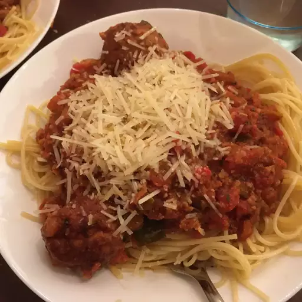

Spaghetti

Spaghetti noodles cook with meat sauce. This dish originated from Italy and is loved everywhere. It's quite a messy dish
and often enjoyed with cheese.
- meat
- tomatos
- itallian seasoning
- spaghetti noodles
- tomato paste
- oil pan
- cook mean until brown
- in another pot cook noodles until al dente(al dente is until noodles are soft)
- add tomato pastte to pan with meat and wait until it begins to simmer
- mix noodles and meat sauce
- enjoy meal and add seasoning to your liking